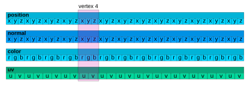
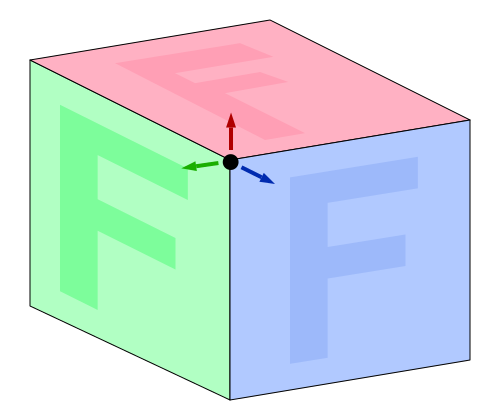

BufferGeometry是Three.js 表示所有几何图形的方式。 BufferGeometry
本质上是一个BufferAttribute的命名集合。
每个 BufferAttribute 表示一种数据类型的数组：位置、
法线、颜色、uv 等...一起，命名的 BufferAttribute 代表
每个顶点的所有数据的并行数组。

上面你可以看到我们有4个属性：position、normal、color、uv。
它们代表并行数组，这意味着每个数组中的第 N 组数据
属性属于同一个顶点。索引 = 4 处的顶点被突出显示
来表明跨所有属性的并行数据定义一个顶点。
这提出了一个观点，这是一个突出显示一个角的立方体图。

考虑到单个角需要为每个面提供不同的法线 立方体。法线是关于物体面向哪个方向的信息。图中 法线由拐角顶点周围的箭头表示，表明每个 共享该顶点位置的面需要指向不同方向的法线。
该角的每个面也需要不同的 UV。 UV 是纹理坐标 指定在三角形上绘制的纹理的哪一部分对应于该部分 顶点位置。您可以看到绿色面需要该顶点具有对应的 UV 到F纹理的右上角，蓝色面需要对应于 F纹理的左上角，红面需要对应底部的UV F 纹理的左角。
单个顶点是其所有部分的组合。如果一个顶点需要任何 如果部分不同，那么它必须是不同的顶点。
作为一个简单的示例，让我们使用 BufferGeometry 制作一个立方体。立方体很有趣
因为它看起来在拐角处共享顶点，但实际上
没有。对于我们的示例，我们将列出所有顶点及其所有数据
然后将这些数据转换为并行数组，最后使用它们来制作
BufferAttribute 并将它们添加到 BufferGeometry.
我们从多维数据集所需的所有数据的列表开始。再次记住 如果一个顶点有任何独特的部分，它必须是一个单独的顶点。因此 制作一个立方体需要 36 个顶点。每个面 2 个三角形，每个三角形 3 个顶点， 6 个面 = 36 个顶点。
const vertices = [
// front
{ pos: [-1, -1, 1], norm: [ 0, 0, 1], uv: [0, 0], },
{ pos: [ 1, -1, 1], norm: [ 0, 0, 1], uv: [1, 0], },
{ pos: [-1, 1, 1], norm: [ 0, 0, 1], uv: [0, 1], },
{ pos: [-1, 1, 1], norm: [ 0, 0, 1], uv: [0, 1], },
{ pos: [ 1, -1, 1], norm: [ 0, 0, 1], uv: [1, 0], },
{ pos: [ 1, 1, 1], norm: [ 0, 0, 1], uv: [1, 1], },
// right
{ pos: [ 1, -1, 1], norm: [ 1, 0, 0], uv: [0, 0], },
{ pos: [ 1, -1, -1], norm: [ 1, 0, 0], uv: [1, 0], },
{ pos: [ 1, 1, 1], norm: [ 1, 0, 0], uv: [0, 1], },
{ pos: [ 1, 1, 1], norm: [ 1, 0, 0], uv: [0, 1], },
{ pos: [ 1, -1, -1], norm: [ 1, 0, 0], uv: [1, 0], },
{ pos: [ 1, 1, -1], norm: [ 1, 0, 0], uv: [1, 1], },
// back
{ pos: [ 1, -1, -1], norm: [ 0, 0, -1], uv: [0, 0], },
{ pos: [-1, -1, -1], norm: [ 0, 0, -1], uv: [1, 0], },
{ pos: [ 1, 1, -1], norm: [ 0, 0, -1], uv: [0, 1], },
{ pos: [ 1, 1, -1], norm: [ 0, 0, -1], uv: [0, 1], },
{ pos: [-1, -1, -1], norm: [ 0, 0, -1], uv: [1, 0], },
{ pos: [-1, 1, -1], norm: [ 0, 0, -1], uv: [1, 1], },
// left
{ pos: [-1, -1, -1], norm: [-1, 0, 0], uv: [0, 0], },
{ pos: [-1, -1, 1], norm: [-1, 0, 0], uv: [1, 0], },
{ pos: [-1, 1, -1], norm: [-1, 0, 0], uv: [0, 1], },
{ pos: [-1, 1, -1], norm: [-1, 0, 0], uv: [0, 1], },
{ pos: [-1, -1, 1], norm: [-1, 0, 0], uv: [1, 0], },
{ pos: [-1, 1, 1], norm: [-1, 0, 0], uv: [1, 1], },
// top
{ pos: [ 1, 1, -1], norm: [ 0, 1, 0], uv: [0, 0], },
{ pos: [-1, 1, -1], norm: [ 0, 1, 0], uv: [1, 0], },
{ pos: [ 1, 1, 1], norm: [ 0, 1, 0], uv: [0, 1], },
{ pos: [ 1, 1, 1], norm: [ 0, 1, 0], uv: [0, 1], },
{ pos: [-1, 1, -1], norm: [ 0, 1, 0], uv: [1, 0], },
{ pos: [-1, 1, 1], norm: [ 0, 1, 0], uv: [1, 1], },
// bottom
{ pos: [ 1, -1, 1], norm: [ 0, -1, 0], uv: [0, 0], },
{ pos: [-1, -1, 1], norm: [ 0, -1, 0], uv: [1, 0], },
{ pos: [ 1, -1, -1], norm: [ 0, -1, 0], uv: [0, 1], },
{ pos: [ 1, -1, -1], norm: [ 0, -1, 0], uv: [0, 1], },
{ pos: [-1, -1, 1], norm: [ 0, -1, 0], uv: [1, 0], },
{ pos: [-1, -1, -1], norm: [ 0, -1, 0], uv: [1, 1], },
];
然后我们可以将所有这些转换为 3 个并行数组
const positions = [];
const normals = [];
const uvs = [];
for (const vertex of vertices) {
positions.push(...vertex.pos);
normals.push(...vertex.norm);
uvs.push(...vertex.uv);
}
最后我们可以创建一个 BufferGeometry 然后创建一个 BufferAttribute 每个数组
并将其添加到 BufferGeometry.
const geometry = new THREE.BufferGeometry();
const positionNumComponents = 3;
const normalNumComponents = 3;
const uvNumComponents = 2;
geometry.setAttribute(
'position',
new THREE.BufferAttribute(new Float32Array(positions), positionNumComponents));
geometry.setAttribute(
'normal',
new THREE.BufferAttribute(new Float32Array(normals), normalNumComponents));
geometry.setAttribute(
'uv',
new THREE.BufferAttribute(new Float32Array(uvs), uvNumComponents));
请注意，名称很重要。您必须为您的属性命名
符合 Three.js 的期望（除非您正在创建自定义着色器）。
在本例中为 position、normal 和 uv。如果你想要顶点颜色那么
将您的属性命名为color.
上面我们创建了3个JavaScript本机数组：positions、normals和uvs。
然后我们将它们转换为
TypedArray
类型为Float32Array。 BufferAttribute 需要 TypedArray 而不是本机
数组。 BufferAttribute 还要求您告诉它有多少个组件
是每个顶点。对于位置和法线，每个顶点有 3 个分量，
x、y 和 z。对于 UV，我们有 2、u 和 v.
这是很多数据。我们可以做的一件小事就是使用索引来引用 顶点。回顾我们的立方体数据，每个面都由 2 个三角形组成 每个顶点有 3 个，总共 6 个顶点，但其中 2 个顶点完全相同； 相同的位置、相同的法线和相同的紫外线。 所以，我们可以删除匹配的顶点，然后 通过索引引用它们。首先我们删除匹配的顶点。
const vertices = [
// front
{ pos: [-1, -1, 1], norm: [ 0, 0, 1], uv: [0, 0], }, // 0
{ pos: [ 1, -1, 1], norm: [ 0, 0, 1], uv: [1, 0], }, // 1
{ pos: [-1, 1, 1], norm: [ 0, 0, 1], uv: [0, 1], }, // 2
-
- { pos: [-1, 1, 1], norm: [ 0, 0, 1], uv: [0, 1], },
- { pos: [ 1, -1, 1], norm: [ 0, 0, 1], uv: [1, 0], },
{ pos: [ 1, 1, 1], norm: [ 0, 0, 1], uv: [1, 1], }, // 3
// right
{ pos: [ 1, -1, 1], norm: [ 1, 0, 0], uv: [0, 0], }, // 4
{ pos: [ 1, -1, -1], norm: [ 1, 0, 0], uv: [1, 0], }, // 5
-
- { pos: [ 1, 1, 1], norm: [ 1, 0, 0], uv: [0, 1], },
- { pos: [ 1, -1, -1], norm: [ 1, 0, 0], uv: [1, 0], },
{ pos: [ 1, 1, 1], norm: [ 1, 0, 0], uv: [0, 1], }, // 6
{ pos: [ 1, 1, -1], norm: [ 1, 0, 0], uv: [1, 1], }, // 7
// back
{ pos: [ 1, -1, -1], norm: [ 0, 0, -1], uv: [0, 0], }, // 8
{ pos: [-1, -1, -1], norm: [ 0, 0, -1], uv: [1, 0], }, // 9
-
- { pos: [ 1, 1, -1], norm: [ 0, 0, -1], uv: [0, 1], },
- { pos: [-1, -1, -1], norm: [ 0, 0, -1], uv: [1, 0], },
{ pos: [ 1, 1, -1], norm: [ 0, 0, -1], uv: [0, 1], }, // 10
{ pos: [-1, 1, -1], norm: [ 0, 0, -1], uv: [1, 1], }, // 11
// left
{ pos: [-1, -1, -1], norm: [-1, 0, 0], uv: [0, 0], }, // 12
{ pos: [-1, -1, 1], norm: [-1, 0, 0], uv: [1, 0], }, // 13
-
- { pos: [-1, 1, -1], norm: [-1, 0, 0], uv: [0, 1], },
- { pos: [-1, -1, 1], norm: [-1, 0, 0], uv: [1, 0], },
{ pos: [-1, 1, -1], norm: [-1, 0, 0], uv: [0, 1], }, // 14
{ pos: [-1, 1, 1], norm: [-1, 0, 0], uv: [1, 1], }, // 15
// top
{ pos: [ 1, 1, -1], norm: [ 0, 1, 0], uv: [0, 0], }, // 16
{ pos: [-1, 1, -1], norm: [ 0, 1, 0], uv: [1, 0], }, // 17
-
- { pos: [ 1, 1, 1], norm: [ 0, 1, 0], uv: [0, 1], },
- { pos: [-1, 1, -1], norm: [ 0, 1, 0], uv: [1, 0], },
{ pos: [ 1, 1, 1], norm: [ 0, 1, 0], uv: [0, 1], }, // 18
{ pos: [-1, 1, 1], norm: [ 0, 1, 0], uv: [1, 1], }, // 19
// bottom
{ pos: [ 1, -1, 1], norm: [ 0, -1, 0], uv: [0, 0], }, // 20
{ pos: [-1, -1, 1], norm: [ 0, -1, 0], uv: [1, 0], }, // 21
-
- { pos: [ 1, -1, -1], norm: [ 0, -1, 0], uv: [0, 1], },
- { pos: [-1, -1, 1], norm: [ 0, -1, 0], uv: [1, 0], },
{ pos: [ 1, -1, -1], norm: [ 0, -1, 0], uv: [0, 1], }, // 22
{ pos: [-1, -1, -1], norm: [ 0, -1, 0], uv: [1, 1], }, // 23
];
所以现在我们有 24 个唯一的顶点。然后我们指定36个索引
对于 36 个顶点，我们需要通过调用带有索引数组的 BufferGeometry.setIndex 来绘制 12 个三角形。
geometry.setAttribute(
'position',
new THREE.BufferAttribute(positions, positionNumComponents));
geometry.setAttribute(
'normal',
new THREE.BufferAttribute(normals, normalNumComponents));
geometry.setAttribute(
'uv',
new THREE.BufferAttribute(uvs, uvNumComponents));
+geometry.setIndex([
+ 0, 1, 2, 2, 1, 3, // front
+ 4, 5, 6, 6, 5, 7, // right
+ 8, 9, 10, 10, 9, 11, // back
+ 12, 13, 14, 14, 13, 15, // left
+ 16, 17, 18, 18, 17, 19, // top
+ 20, 21, 22, 22, 21, 23, // bottom
+]);
BufferGeometry 有一个 computeVertexNormals 计算法线的方法，如果您
不供应他们。不幸的是，
因为如果顶点的任何其他部分不同，则无法共享位置，
调用 computeVertexNormals 的结果将产生接缝，如果你
几何体应该像球体或圆柱体一样连接到自身。
对于法线上方的圆柱体是使用computeVertexNormals创建的。
如果仔细观察，可以发现圆柱体上有一条接缝。这是因为有
无法共享圆柱体起点和终点的顶点，因为它们
需要不同的 UV，因此计算它们的函数不知道这些是
相同的顶点来平滑它们。只是一件需要注意的小事。
解决方案是提供您自己的法线。
我们还可以从一开始就使用 TypedArrays 而不是原生 JavaScript 数组。
TypedArray 的缺点是您必须预先指定它们的大小。的
当然这并不是那么大的负担，但是使用本机数组我们可以
push 值到它们上，并通过检查它们的大小来查看它们最终的大小
length 在最后。对于 TypedArrays 没有推送功能，所以我们需要
在向它们添加值时进行我们自己的簿记。
在这个示例中，知道前面的长度非常容易，因为我们使用的是 一大块静态数据开始。
-const positions = [];
-const normals = [];
-const uvs = [];
+const numVertices = vertices.length;
+const positionNumComponents = 3;
+const normalNumComponents = 3;
+const uvNumComponents = 2;
+const positions = new Float32Array(numVertices * positionNumComponents);
+const normals = new Float32Array(numVertices * normalNumComponents);
+const uvs = new Float32Array(numVertices * uvNumComponents);
+let posNdx = 0;
+let nrmNdx = 0;
+let uvNdx = 0;
for (const vertex of vertices) {
- positions.push(...vertex.pos);
- normals.push(...vertex.norm);
- uvs.push(...vertex.uv);
+ positions.set(vertex.pos, posNdx);
+ normals.set(vertex.norm, nrmNdx);
+ uvs.set(vertex.uv, uvNdx);
+ posNdx += positionNumComponents;
+ nrmNdx += normalNumComponents;
+ uvNdx += uvNumComponents;
}
geometry.setAttribute(
'position',
- new THREE.BufferAttribute(new Float32Array(positions), positionNumComponents));
+ new THREE.BufferAttribute(positions, positionNumComponents));
geometry.setAttribute(
'normal',
- new THREE.BufferAttribute(new Float32Array(normals), normalNumComponents));
+ new THREE.BufferAttribute(normals, normalNumComponents));
geometry.setAttribute(
'uv',
- new THREE.BufferAttribute(new Float32Array(uvs), uvNumComponents));
+ new THREE.BufferAttribute(uvs, uvNumComponents));
geometry.setIndex([
0, 1, 2, 2, 1, 3, // front
4, 5, 6, 6, 5, 7, // right
8, 9, 10, 10, 9, 11, // back
12, 13, 14, 14, 13, 15, // left
16, 17, 18, 18, 17, 19, // top
20, 21, 22, 22, 21, 23, // bottom
]);
使用 typedarrays 的一个很好的理由是如果你想动态更新任何 顶点的一部分.
我想不出动态更新顶点的真正好的例子 所以我决定制作一个球体并将每个四边形从中心移入和移出。希望 这是一个有用的示例。
这里是生成球体位置和索引的代码。代码 在四边形内共享顶点，但不在四边形之间共享顶点 四边形，因为我们希望能够单独移动每个四边形。
因为我很懒，我使用了 3 个 Object3D 对象的小型层次结构来计算
球体点。 关于优化大量对象的文章解释了它的工作原理。
function makeSpherePositions(segmentsAround, segmentsDown) {
const numVertices = segmentsAround * segmentsDown * 6;
const numComponents = 3;
const positions = new Float32Array(numVertices * numComponents);
const indices = [];
const longHelper = new THREE.Object3D();
const latHelper = new THREE.Object3D();
const pointHelper = new THREE.Object3D();
longHelper.add(latHelper);
latHelper.add(pointHelper);
pointHelper.position.z = 1;
const temp = new THREE.Vector3();
function getPoint(lat, long) {
latHelper.rotation.x = lat;
longHelper.rotation.y = long;
longHelper.updateMatrixWorld(true);
return pointHelper.getWorldPosition(temp).toArray();
}
let posNdx = 0;
let ndx = 0;
for (let down = 0; down < segmentsDown; ++down) {
const v0 = down / segmentsDown;
const v1 = (down + 1) / segmentsDown;
const lat0 = (v0 - 0.5) * Math.PI;
const lat1 = (v1 - 0.5) * Math.PI;
for (let across = 0; across < segmentsAround; ++across) {
const u0 = across / segmentsAround;
const u1 = (across + 1) / segmentsAround;
const long0 = u0 * Math.PI * 2;
const long1 = u1 * Math.PI * 2;
positions.set(getPoint(lat0, long0), posNdx); posNdx += numComponents;
positions.set(getPoint(lat1, long0), posNdx); posNdx += numComponents;
positions.set(getPoint(lat0, long1), posNdx); posNdx += numComponents;
positions.set(getPoint(lat1, long1), posNdx); posNdx += numComponents;
indices.push(
ndx, ndx + 1, ndx + 2,
ndx + 2, ndx + 1, ndx + 3,
);
ndx += 4;
}
}
return {positions, indices};
}
然后我们可以这样调用它
const segmentsAround = 24;
const segmentsDown = 16;
const {positions, indices} = makeSpherePositions(segmentsAround, segmentsDown);
因为返回的位置是单位球体位置，所以它们完全相同 我们需要法线的值，这样我们就可以将它们复制到法线中。
const normals = positions.slice();
然后我们像之前一样设置属性
const geometry = new THREE.BufferGeometry();
const positionNumComponents = 3;
const normalNumComponents = 3;
+const positionAttribute = new THREE.BufferAttribute(positions, positionNumComponents);
+positionAttribute.setUsage(THREE.DynamicDrawUsage);
geometry.setAttribute(
'position',
+ positionAttribute);
geometry.setAttribute(
'normal',
new THREE.BufferAttribute(normals, normalNumComponents));
geometry.setIndex(indices);
我突出显示了一些差异。我们保存对位置属性的引用。 我们还将其标记为动态。这是对 THREE.js 的暗示，我们将进行更改 属性的内容经常。
在我们的渲染循环中，我们根据每帧的法线更新位置。
const temp = new THREE.Vector3();
...
for (let i = 0; i < positions.length; i += 3) {
const quad = (i / 12 | 0);
const ringId = quad / segmentsAround | 0;
const ringQuadId = quad % segmentsAround;
const ringU = ringQuadId / segmentsAround;
const angle = ringU * Math.PI * 2;
temp.fromArray(normals, i);
temp.multiplyScalar(THREE.MathUtils.lerp(1, 1.4, Math.sin(time + ringId + angle) * .5 + .5));
temp.toArray(positions, i);
}
positionAttribute.needsUpdate = true;
并且我们设置positionAttribute.needsUpdate来告诉THREE.js使用我们的更改。
我希望这些是如何使用BufferGeometry 直接
制作您自己的几何体以及如何动态更新几何体的内容
BufferAttribute.
{kind=link}